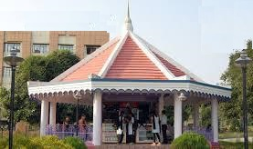

G.I.E.T. University
Gunupur
LIBRARY
.png) |
Information is the most important input in making of Intellectuals. The Central library emphasizes the actual delivery of information and keeps pace with the ever changing demands of the time. The Knowledge Centre is 24 hrs opened, air-conditioned having reading hall capacity of 500 students. It makes a peaceful atmosphere and an ideal place for development the knowledge and skills by the students and faculty. Besides this all individual departments have their own library for ready reference. Along with traditional library concept the knowledge centre is also automated which use international standard software. |
|---|---|
.png) |
Some of the salient features of the Knowledge Center are: - The Collection replete with 63,968 Volumes of Books - 5,480 T Volumes - 4441 CDs. & DVDs - Subscribes 104 National and International Print Journals - 670+ subscribed e-Journals of IEEE, ASME, ASCE ,SCIENCE DIRECT - 49 Magazines - 21 Daily Newspapers - Member of DELNET - Provides NPTEL facilities in both audio and video to the user through the intranet The Library, besides having a huge collection of books on engineering, sciences, humanities. It also collect books on English and Oriya literature fictions, non-fictions and biographies of eminent personalities. |
.png) |
Rules for Book-Bank - Applications through Principal/librarian are invited in the beginning of the semester. - Maximum 6 nos. of books will be issued for a semester. - Book(s) will be issued after remit of 20% of total cost of Book(s) as maintenance charges. - All students who are availing the facility must return the books within 7 days of completion of their Semester examination. |
.png) |
Other Services of knowledge Center - Photocopy at very minimum price - Spiral and Lamination Facility - Paper Clipping Services - Property Counter for safekeeping of the property of the student - 24 hrs power back up Facility - Issue of ID card to the Student - Document Scanning Facility Working Hours - Circulation Section – 9.00 am to 6.00 pm - Reference Section – Round the clock (24x7x365) - Digital Library – 9.00 am to 7.00pm |
hostel
.png) |
Generations of students from near and far have called the 62 acres their home away from home. Whether they live in one of 32 hostels or eat at mess or canteen the institution environs offer a variety of choices when it comes to finding a place to call home. There are 32 hostels. 22 hostel for boys and 10 hostel for girls with total 3,500 capacity. Every hostel has in-house lecturer-superintendents (a unique feature) besides matrons, welfare officers and care takers. Every hostel is provided with telephone, cable TV, newspapers, magazines, indoor and outdoor games, water purifiers, voltage stabilizers and generators etc. Hostels are regularly visited by doctors, principal, Dean (Admn.) and warden. Two ambulances attend all medical problems. |
|---|---|
.png) |
For Students living on campus, you have the convenience of having classes, libraries and university facilities in your own backyard. Many Students consider quality of life as one of the important factors while choosing anInstitution. We provide a decent stay and the best possible learning environment. The stay at campus would certainly provide a wealth of experience by developing qualities such as comradeship and social responsibility. Campus Hostels has a common mess with well equipped kitchen and massive dining area of 1,700 student capacity providing hygienic, nutritious and wholesome meals. Each hostelhasTV room, Newspaper, Carrom, and Chess. The students housed in the campus are encouraged to use the 6 track national level Swimming pool, Gym, playground and all indoor & outdoor gaming facilities. The hostels thus provide reasonable levels of comfort, safe housing, hygienic food, recreation facilities and an environment conducive for pursuit academic and all round development. Life on-campus helps the students not only to study but also to socialize with the peers. Friendship formed in the campus lasts a lifetime. |
.png) |
Room Allotment Allotment of rooms may not necessarily be of one’s choice. It is at the sole discretion of the administration, which may allot the rooms either on first come first serve basis or any other basis, say academic background, etc. Management intentionally places students of varying academic, cultural, social, national backgrounds together so that cross-cultural, academic, social and national learning is achieved. Students are expected to give full respect and equal rights to their roommates, irrespective of their varying backgrounds. Allotment is done on a double / triple occupancy basis (i.e., two or three persons per room). The rental value has been worked out on this basis. Students must occupy the rooms allotted to them and should not exchange rooms without the knowledge of the concerned deputy warden. The deputy warden without assigning any reason may shift inmates from one room to another. |
.png) |
General Discipline Identity card will be issued to all the inmates of the hostel. They should produce their identity cards on demand. Students should lock the rooms so as to keep their valuables safely and the hostel administration will not entertain complaints of theft of Laptops, Cell Phones, Cash and Jewellery. Laptops can be kept under safe custody of the hostels. Entry of all particulars of Laptops in hostel register of every block is a must. Members are strictly forbidden from using personal gadgets like transistors, tape recorder, VCR/VCD/DVD, hot plate, electric iron, cookers etc. However, to use other electrical appliances such as personal computers, table fan etc permission will be given on specific request and will be charged extra. Members should not tap electricity from other than the points provided for the purpose. You are expected to use the electrical appliances and fixtures in an efficient manner. For example, if you are not in your room, lights and fans should be switched off. Students using computers are not permitted to use multimedia speakers. Violation of this will be viewed seriously. Students are advised always to keep their belongings under lock & key and to lock their rooms whenever they go out. Students are advised not to keep expensive jewellery, heavy cash or any other valuables in their rooms. The hostel management does not own any responsibility for the loss of property left in the rooms due to the inmate’s negligence. Students should not entertain vendors of petty items in the hostel blocks. However, licensed washer man shall alone be permitted to enter the hostel. No member is permitted to entertain any ex-student of this institution or other institutions. The penalty for disobedience of this rule will be very severe. Members shall not give any tips to service personals or cooks of the hostel & shall not demand any special service from any hostel employee. Students are not permitted to engage private guards. Students should not arrange any function, meeting, or religious gathering within the hostel campus without special permission of the authorities. If the administration allows residents to organize any function, the hostel representative may be asked to provide a written undertaking of good conduct and observing accepted norms of behavior. Students involving in business, collection of funds, compelling others to join in some organization as a member etc must not be made under any circumstances. Inmates of the hostel are not allowed to make any complaint as a group. Individual petitions alone, addressed to the warden will be looked into. No one shall indulge in politics, violence, rioting or instigate communal feelings or have dealings with outside elements. Such activities may lead to expulsion of the student from the hostel and college. No member shall absent himself from the hostel without prior permission from the deputy warden. The students of the hostel are not allowed to stay in the hostel during the college working hours. In case if they have to stay, they should apply for leave as per college rules informing the deputy warden/SRO the reasons for staying in the hostel during working hours. Students securing less than 90% attendance in a semester will not be permitted to stay in the hostel for the subsequent semesters. Misconduct or infringements of rules & regulations and activities which are not in the interest of the institution and harmful to the reputation of the institution will make a student liable for severe disciplinary action and even expulsion from the hostel & College. |
sports
.png) |
The institute provides ample opportunity for the students to take part in all indoor and outdoor sports, games & recreation activities. Sports annex is located adjacent to the college and has facilities for playing and practicing Volleyball, Basketball, Badminton, Football, Cricket and Swimming. Our Basketball court and the swimming pool are laid as per international standards. Inter college tournaments, inter class matches and annual athletic meet are regular features of the institution. Many students represent the institute in various sports & games. The college football, cricket, Volleyball and Basket Ball teams have won awards at various tournaments and competitions. The college has the distinction of winning the inter-collegiate knockout Cricket and Table Tennis championship for consecutive years. The National standard 6 track swimming pool caters the need of the students. Boys Students both boys & girls and staff are allowed to use swimming pool according to separate schedules. |
|---|---|
.png) |
Gym There is an ultra-modern multi gym with an instructor is provided to keep the students fit round the year. The Gym is open in early morning and in late evening for exercise. The gym is equipped with all the modern exercising equipments such as: Treadmills, Upright Bike, Recumbent Bike, Elliptical Cross Trainer, Eglide, Spin Bike, Stair Climber, Life Fitness Cadio, Nautilus and Stair Master etc. |
.png) |
Yoga & Meditation Centre Apart from the picturesque green and eco-friendly, soft grass carpeted gardens; the student centre is also devoted with a room for yoga. Yoga instructors often visit the centre to guide the members of the college for a healthy life style. |
.png) |
ACHIEVEMENT IN SPORTS & GAMES - Inter college Basketball CHAMPIONSHIP 2014 at NIST, Berhampur - 10thASIM Memorial engineers cup cricket Tournament 2014, NIST,Berhampur- Runners Up - Inter University Sports meet 2014.CUTM, Parlakhemundi - Basket ball championship 2014-Champion - Volley ball Championship 2014- Champion - Badminton Doubles Runners up - Sports fiesta 2014-Swimmimg,NIT,ROURKELA - 100 mts free style- 1st - 50 mts free style -2nd - 50 mtsBack stroke -2nd - 10 students participated in 55th State basketball championship 2014, Cuttack - 04 Students participated in Sr.Kalahandi Cricket Tournament 2014,Cuttack - 03 Students participated in 55thstate Swimming Champion 2014,Cuttack |
mess
.png) |
Mess Timings Food will be served at the following timings: - Breakfast 7.00 am to 8.30 am - Lunch 12.00 noon to 1.30 pm - Tea 4.30 pm to 5.30 pm - Dinner 7.30 pm to 9.00 pm Night Canteen - 11:00pm – 02:00 am (during mid sem and end sem) |
|---|---|
 |
Dining Hall/ Mess Rules Once a student joins the hostel, he / she is deemed to have become a member of the mess until he / she vacates the hostel officially. The mess is run by the management. Strict discipline should be maintained in the dining hall. Day scholars will not be entertained as guests in the mess. Food will not be served in rooms and the inmates are not supposed to take food to their rooms. If an inmate is ill, the deputy warden will make suitable arrangements. The inmates should not enter the kitchen. Wasting food is a crime. No diner shall waste food. Paying mess bill does not entitle a diner to waste food. If any student is found wasting food he / she will be fined Rs500/- for the first time. If the same student is found repeating the same mistake he / she will be expelled from the hostel. The system of self service will be followed in the mess. All diners shall produce ID card and Mess card to dine every time in the mess. |
cp
|  | A Place where students can enjoy durning their break. Place to satisify their hunger during the class. Place to meet and greet with their friends. |
|---|
temple
.png) |
A Place where we can worship and pray. |
|---|
cafeteria
.png) |
A Place to Get Snacks during Evening. |
|---|
| Home | Admin | Campus Life | Admission | Contact Us:-
Gunupur-765022, Rayagada, Orissa 06857-250170,250172,250157 enquiry@giet.edu |
|---|